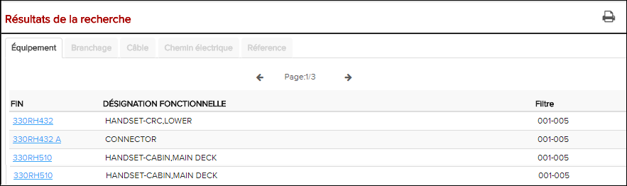
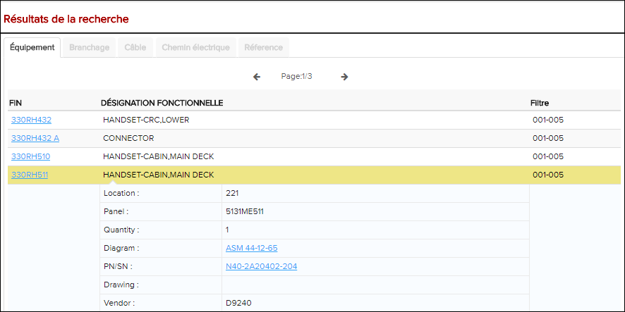

Les résultats de recherche de l'onglet Équipement révèlent des informations sur les composants.
-
Effectuer une recherche d'équipement comme décrit dans Recherche sur listes d'équipement.
Les résultats de la recherche apparaissent dans l'onglet Équipment.

Les résultats de recherche d'Équipement
À partir de l'espace Résultats de la recherche, cliquez sur l'icône
 Imprimer les résultats de la recherche pour imprimer
les résultats de la recherche au format PDF.
Imprimer les résultats de la recherche pour imprimer
les résultats de la recherche au format PDF. -
Cliquez sur une ligne dans le résultat de la recherche pour accéder à plus
d'informations sur l'entrée.
La ligne est mise en surbrillance et agrandie afin que vous puissiez voir des informations détaillées sur l'entrée.

Résultat de recherche d'équipement étendu
Remarque : Les catégories d'informations disponibles sur la page de résultats de recherche varient en fonction du type de recherche.Remarque : Avec une entrée surlignée dans le résultat de recherche d'équipement, vous pouvez ouvrir l'onglet Chemin électrique et déclencher une recherche de chemin électrique pour l'équipement. Si un résultat pour une autre entrée est déjà présent dans l'onglet Chemin électrique, il vous sera demandé si vous voulez démarrer un nouveau chemin électrique avec l'entrée sélectionnée. Pour plus d'informations des instructions sur la navigation par recherche de chemin électrique, voir à Naviguer dans les résultats de recherche dans l'onglet Chemin électrique for instructions to electrical path search navigation. -
Utilisez les résultats de la recherche dans l'onglet Équipement si vous
le souhaitez.
Référer au tableau ci-dessous pour quelques types d'informations affichées:
Tableau 1. Les résultats de recherche sur l'onglet Équipement L'identifiant La description L'activité EIN/FIN Numéro d'identification fonctionnelle ou numéro d'identification de l'équipement. Affiche les données deConnexion pour le composant sélectionné dans l'onglet Résultats de la recherche. Pour plus de détails sur la navigation, merci de voir à Naviguer dans les résultats de la recherche de connexion. DÉSIGNATION FONCTIONNELLE Le nom du composant. Cliquez pour agrandir la ligne et de révéler plus d'informations. Ci-dessous sont les différentes propriétés de ce fil. Le type d'informations disponibles dépend de la publication. Location Désignation numérique de l'emplacement du composant. N/A Quantity Le numéro utilisé. N/A Diagramme/ Illustration Réf. Lien du schéma de câblage. Ouvre le schéma de câblage sélectionné dans le volet Graphique. Dans les diagrammes SVG, FIN / EIN peut également être mis en surbrillance pour faciliter la localisation. PN/SN Le numéro de pièce ou numéro de série. Ouvre la publication ESPM et / ou IPC. Si une référence ne peut pas être trouvée pour le PN ou le SN cliqué, une boîte de dialogue apparaît pour vous informer de ce fait. Drawing Numéro de dessin. N/A Vendor Désignation numérique de l'entreprise qui a vendu le composant. N/A Airline PN Affiche un autre numéro de pièce (ALPRTNBR) N/A Equivalent PN Affiche un numéro de pièce équivalent (EQUIVPNR) N/A FILTRE Efficacité / Applicabilité du numéro de filtre N/A